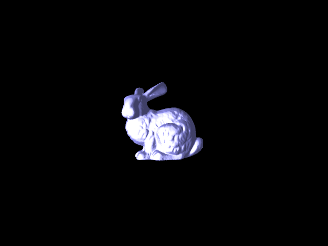

3.1 mesh viewer
First, we parse the .off file. Then for each vertex, we create a Vertex object (more to be explained below), and a Face object for each face specified in the file.
After we parse it, we load it into the openGL buffers in order to draw the triangles. We have a buffer containing all the vertices as vec3 positions and a buffer containing indices that tell openGL the drawing order of the
vertices. After we have these 2, we are able to calculate the normals of each vertex by averaging the face normals of all the nearby faces that a vertex touches. We then render the mesh using a custom shader that calculates lighting based on the normal of each vertex. When we load in the model, we also scale it to a default size such that we can view the full model as soon as we load it.
We also implemented some controls to be able to manipulate the model/debugging:
- WASD: move the model up/down/left/right
- Q/E: translate the model forward/backwards in Z direction
- R/F: scale the model larger/smaller
- K: switch between wireframe/triangle rendering
- L: switch lighting between normal coloring/white default lighting

3.2 mesh connectivity data structure
To define our mesh, we created 3 different structs:
- Face: each face has an ID associated with it, as well as a vector containing a list of ints corresponding to the IDs of the vertices associated with that face.
- Vertex: each vertex has an ID, a vec3 position of the vertex, a vector containing a list of ints corresponding to the IDs of its neighboring vertices, and a vector containing a list of ints corresponding to the IDs of all the faces it is a part of.
- Edge: each edge holds 2 ints; these ints represent the IDs of the vertices of that edge. An edge also holds its cost to be used later in part 3.4
We keep track of all the vertices and all the faces of a mesh by using 2 unordered maps:
- face_list: this maps the int ID of the face to its Face pointer
- vertex_list: this maps the int ID of a vertex to its Vertex pointer
By reading from the OFF format files, we can initialize, index, and map each vertex. After that we can create the adjacency list through using the rest of the face data in the OFF file. We can get the neighbors of each vertex by looking at all the faces the vertex is a part of and adding the other 2 vertices in the face as a member of that vertex's neighbor list.
These let us easily access the members of any Vertex or Face object as long as we know the ID corresponding to that Vertex or Face. Using these data structures, its much more easier to modify vertices and access any point of the graph.
- When we get the pointer of a Vertex, we can loop through, insert or erase from the vectors containing that vertex's neighbors, or that vertex's neighboring faces. We can also edit the position of the vertex which is useful for geomorph.
- When we get the pointer of a Face, we can get the vertices associated with that Face.
3.3 mesh decimation
testpatch.off Edgecollapse 0 1


- As you can see, we were able to collapse 0 and 1 while removing the fin triangles.
plane.off Edgecollapse 11 23


- The first image shows vertex 11 and 23 being collapsed using the midpoint as the result of the merged point.
- The second image merges vertex 23 into vertex 11 while keeping the position at vertex 11.
3.4 quadratic simplification
original bunny wireframe

bunny, after running quadratic simplify many times


To see another example, you can look at our video in part 3.5.
To implement quadratic simplification, we basically implemented the 4 steps on the writeup. First, we created an Edge struct that stores the IDs of the 2 vertices it connects, as well as its cost. To get the cost, we computed the Q matrices in order to get the squared error. Then, we sorted the edges by putting all valid edges into a set sorted by cost, so we can quickly get the first item of the set which is the edge with the lowest cost. Once we get the edge, we calculate the contracted vertex as the midpoint between the 2 vertices in the edge. Then, we call our edge collapse method on those 2 vertices. After that edge is collapsed, we create new Edge objects based off of the edges that were formed during the edge collapse and recalculate the edge costs of all edges.
Our experience with this assignment was a lot of debugging, especially once we finished 3.5. We thought we finished parts of our functions and went on to the next part, but we discovered errors so we had to go back to our previous functions and debuf/fix the errors. Even though our edge collapse might have looked correct, when we rewinded and did vertex split, we learned that some of our vertices were missing faces or neighbors which caused triangles to not be drawn correctly or caused segfaults in our program. We also had to think about how to implement edge cases which came up because we wanted to "delete" certain vertices that were no longer part of any faces but when we vertex split back we still needed to know where that vertex was in order to get the triangle back.
3.5 progressive meshes
To implement vertex spitting, we created a Split struct. Each time edge collapse is called, we create a new Split that contains information about the original 2 vertices that were collapsed (their int IDs as well as vec3 positions), the int ID of the new vertex that was created by the edge collapse, and a vector list of IDs of vertices that were neighbors of both of the original 2 vertices. We then put this Split into a stack which we pop off of each time vertex split is called because we want to reverse the last edge collapse that was done.
When vertex split is called, we create 2 new vertices using the information in the split, with the IDs and positions. Then, we update the neighbors and faces of the new vertices using the vector list of IDs we saved of vertices that were neighbors of both original vertices. Finally, we loop through all the faces neighboring the vertex created in the edge collapse and figure out which of the 2 original points should be in that face by finding out which point is closer to that face. Then, we replace the vertex in the face.
For geomorph,
- edge collapse: first we find the midpoint of the 2 vertices that we are collapsing. Then, we interpolate by getting the delta time between the current time and when we started the geomorph and interpolate between the vertex and the midpoint. We update the vertex's position until it reaches the midpoint. Once the vertex reaches the midpoint, then we call our edge collapse function.
- vertex split: first, we split the midpoint to the 2 vertices, but we set their positions at the midpoint and slowly move them towards their final position through interpolation similarly to how edge collapse was implemented.
For full credit, you
should also implement Hoppe’s geomorph, to create a smooth animation. You should include a video of the
geomorph, along with screenshots on your website.